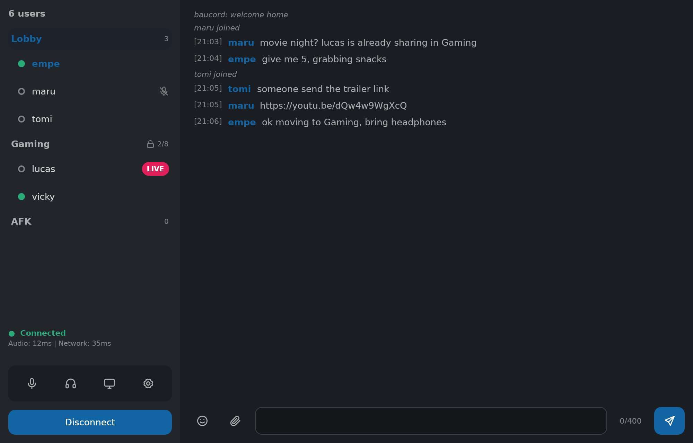
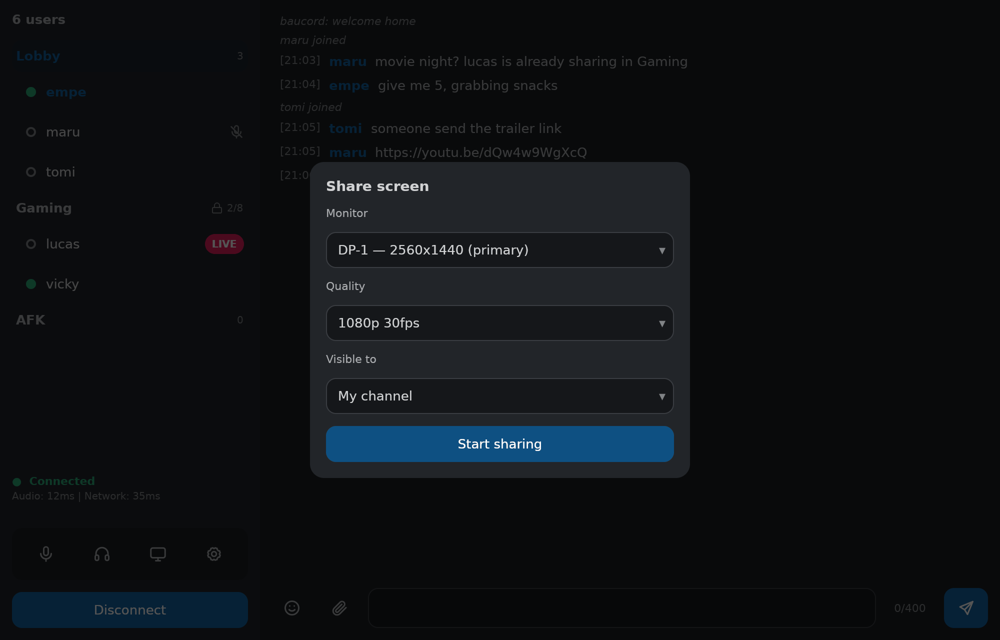
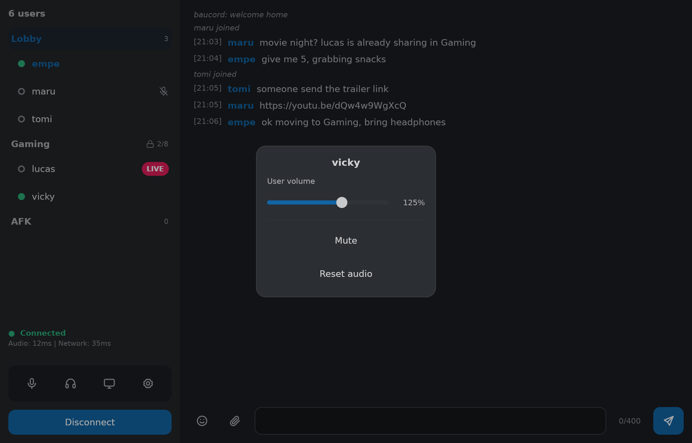
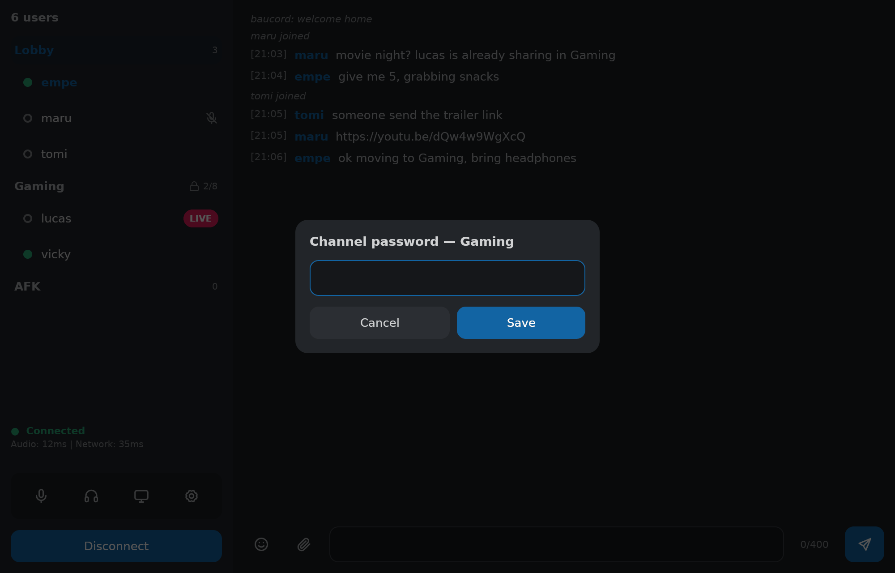
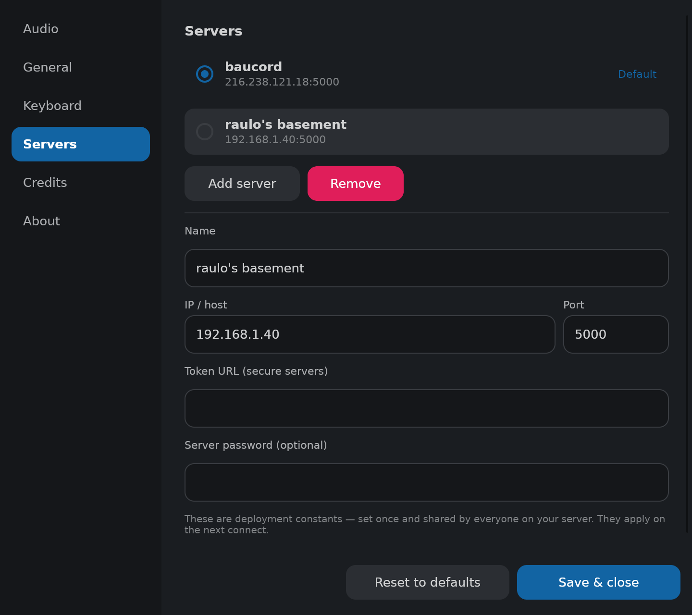
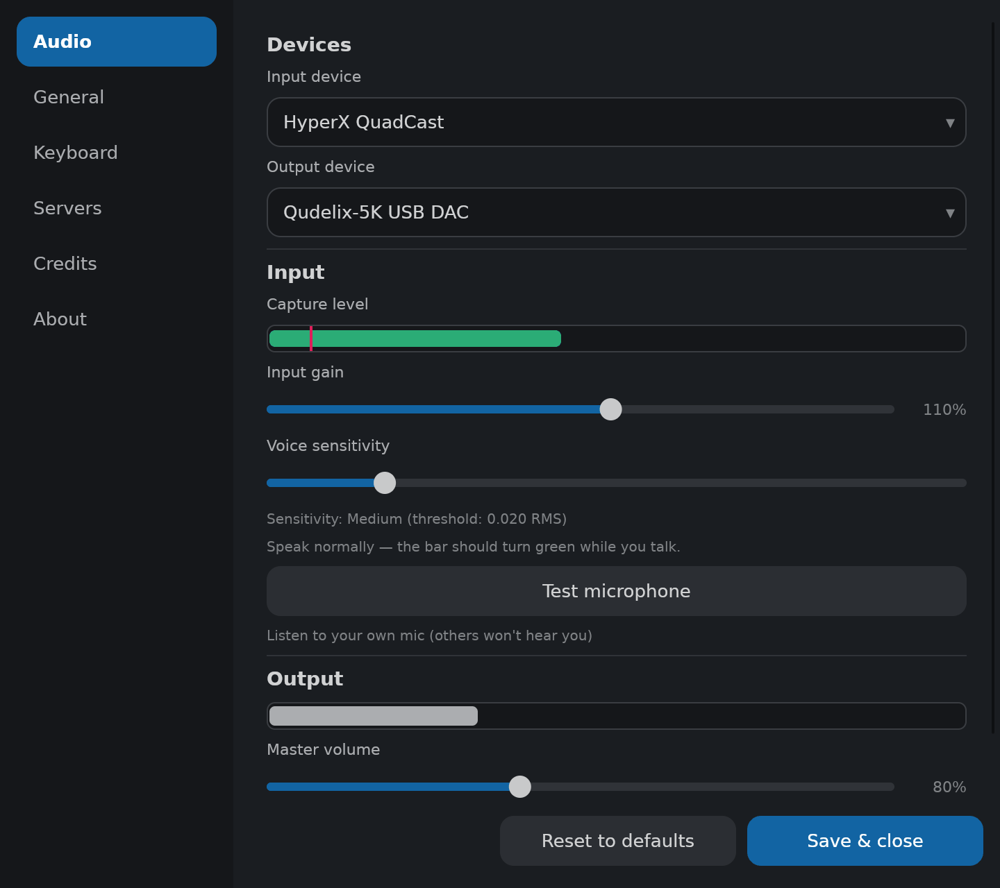
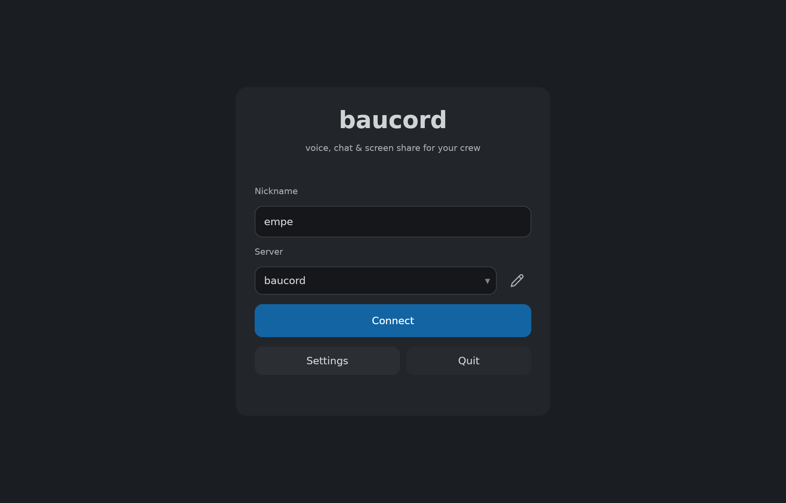

Voice, text and screen sharing on a server you or a friend run. Free, fast, and so lightweight you forget it's there — it sits in the tray using less memory than a browser tab. No accounts, no telemetry, no feed. Just your people, talking.
Windows / macOS / Linux · ~30–50 MB of RAM · free & open source

Hang out with a handful of friends: talk, type, share your screen. Nothing you don't need.
One window, native widgets, nothing to learn. Click any shot to zoom.






There's no company in the middle. One of you runs the server — everyone else just connects to it. No sign-ups, nothing to configure unless you want channels with passwords.
On anything that stays on: a spare computer, a cheap rented box, the homelab. Unzip, run it, done.
That's the invite. There are no accounts to create — a nickname is all anyone needs.
baucord remembers it. From then on it's open the app, hit connect, start talking.
# on whoever's hosting: $ unzip baucord-v__VERSION__-linux-x64.zip $ ./dedicated-server # everyone else: $ ./baucord # enter host:port, pick a name # we have discord at home $
Every zip has the client and the dedicated server for that platform. Grab the one you need; anyone hosting also needs the server-side one.
Unzip, run dedicated-server somewhere your friends can
reach — a spare box, a cheap VPS, a homelab — then hand them the
address. That's the whole deployment.